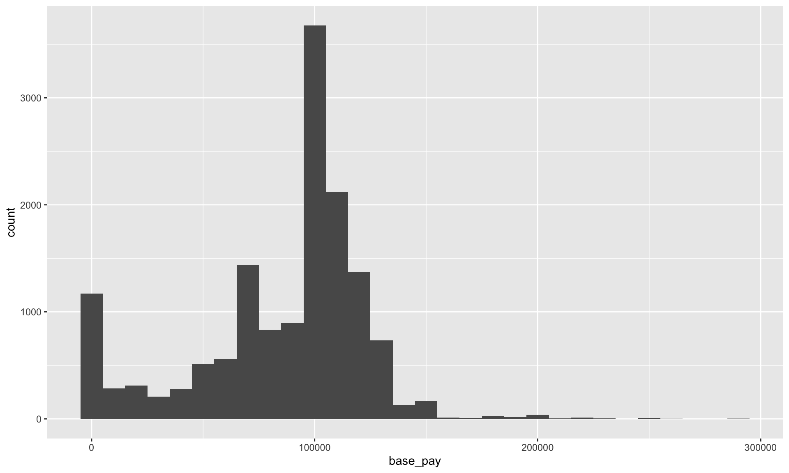

[1] 4 8 16Data Wrangling
Prerequisites
The Pipe Operator %>%
Three solutions to a single problem
What is the average of 4, 8, 16 approximately?
1.What is the average of 4, 8, 16 approximately?
2.What is the average of 4, 8, 16 approximately?
3.What is the average of 4, 8, 16 approximately?
Solution 1: Functions within Functions
Problem with writing functions within functions
Things will get messy and more difficult to read and debug as we deal with more complex operations on data.
Solution 2: Creating Objects
Problem with creating many objects
We will end up with too many objects in Environment.
Solution 3: The (forward) Pipe Operator %>%
Shortcut:
Ctrl (Command) + Shift + M
The output of the first function is the first argument of the second function.
Do you recall composite functions such as \(f \circ g(x)\)?
Now we have \(f \circ g \circ h (x)\) or round(mean(c(4, 8, 16)))
Subsetting data frames
Rows: 68,564
Columns: 35
$ `Row ID` <chr> "3-1000027830ctFu", "3-1000155488ctFu",…
$ Year <dbl> 2013, 2013, 2013, 2013, 2013, 2013, 201…
$ `Department Title` <chr> "Police (LAPD)", "Police (LAPD)", "Poli…
$ `Payroll Department` <dbl> 4301, 4302, 4301, 4301, 4302, 4302, 430…
$ `Record Number` <dbl> 1000027830, 1000155488, 1000194958, 100…
$ `Job Class Title` <chr> "Police Detective II", "Clerk Typist", …
$ `Employment Type` <chr> "Full Time", "Full Time", "Full Time", …
$ `Hourly or Event Rate` <dbl> 53.16, 23.77, 60.80, 60.98, 45.06, 34.4…
$ `Projected Annual Salary` <dbl> 110998.08, 49623.67, 126950.40, 127326.…
$ `Q1 Payments` <dbl> 24931.20, 11343.96, 24184.00, 29391.20,…
$ `Q2 Payments` <dbl> 29181.61, 13212.37, 28327.20, 36591.20,…
$ `Q3 Payments` <dbl> 26545.80, 11508.36, 28744.20, 32904.81,…
$ `Q4 Payments` <dbl> 29605.30, 13442.53, 33224.88, 37234.03,…
$ `Payments Over Base Pay` <dbl> 4499.12, 1844.82, 13192.43, 18034.53, 1…
$ `% Over Base Pay` <dbl> 0, 0, 0, 0, 0, 0, 0, 0, 0, 0, 0, 0, 0, …
$ `Total Payments` <dbl> 110263.91, 49507.22, 114480.28, 136121.…
$ `Base Pay` <dbl> 105764.79, 47662.40, 101287.85, 118086.…
$ `Permanent Bonus Pay` <dbl> 3174.12, 0.00, 7363.95, 7086.67, 0.00, …
$ `Longevity Bonus Pay` <dbl> 0.00, 1310.82, 0.00, 0.00, 1251.19, 172…
$ `Temporary Bonus Pay` <dbl> 1325.00, 0.00, 1205.00, 1325.00, 125.00…
$ `Lump Sum Pay` <dbl> 0.00, 0.00, 2133.18, 0.00, 2068.80, 0.0…
$ `Overtime Pay` <dbl> 0.00, 0.00, 4424.32, 9839.33, 0.00, 0.0…
$ `Other Pay & Adjustments` <dbl> 0.00, 534.00, -1934.02, -216.47, -2068.…
$ `Other Pay (Payroll Explorer)` <dbl> 4499.12, 1844.82, 8768.11, 8195.20, 137…
$ MOU <chr> "24", "3", "24", "24", "12", "3", "24",…
$ `MOU Title` <chr> "POLICE OFFICERS UNIT", "CLERICAL UNIT"…
$ `FMS Department` <dbl> 70, 70, 70, 70, 70, 70, 70, 70, 70, 70,…
$ `Job Class` <chr> "2223", "1358", "2227", "2232", "1839",…
$ `Pay Grade` <chr> "2", "0", "1", "1", "0", "2", "3", "1",…
$ `Average Health Cost` <dbl> 11651.40, 10710.24, 11651.40, 11651.40,…
$ `Average Dental Cost` <dbl> 898.08, 405.24, 898.08, 898.08, 405.24,…
$ `Average Basic Life` <dbl> 191.04, 11.40, 191.04, 191.04, 11.40, 1…
$ `Average Benefit Cost` <dbl> 12740.52, 11126.88, 12740.52, 12740.52,…
$ `Benefits Plan` <chr> "Police", "City", "Police", "Police", "…
$ `Job Class Link` <chr> "http://per.lacity.org/perspecs/2223.pd…Rows: 68,564
Columns: 35
$ row_id <chr> "3-1000027830ctFu", "3-1000155488ctFu", "3-…
$ year <dbl> 2013, 2013, 2013, 2013, 2013, 2013, 2013, 2…
$ department_title <chr> "Police (LAPD)", "Police (LAPD)", "Police (…
$ payroll_department <dbl> 4301, 4302, 4301, 4301, 4302, 4302, 4301, 4…
$ record_number <dbl> 1000027830, 1000155488, 1000194958, 1000232…
$ job_class_title <chr> "Police Detective II", "Clerk Typist", "Pol…
$ employment_type <chr> "Full Time", "Full Time", "Full Time", "Ful…
$ hourly_or_event_rate <dbl> 53.16, 23.77, 60.80, 60.98, 45.06, 34.42, 4…
$ projected_annual_salary <dbl> 110998.08, 49623.67, 126950.40, 127326.24, …
$ q1_payments <dbl> 24931.20, 11343.96, 24184.00, 29391.20, 208…
$ q2_payments <dbl> 29181.61, 13212.37, 28327.20, 36591.20, 241…
$ q3_payments <dbl> 26545.80, 11508.36, 28744.20, 32904.81, 215…
$ q4_payments <dbl> 29605.30, 13442.53, 33224.88, 37234.03, 252…
$ payments_over_base_pay <dbl> 4499.12, 1844.82, 13192.43, 18034.53, 1376.…
$ percent_over_base_pay <dbl> 0, 0, 0, 0, 0, 0, 0, 0, 0, 0, 0, 0, 0, 0, 0…
$ total_payments <dbl> 110263.91, 49507.22, 114480.28, 136121.24, …
$ base_pay <dbl> 105764.79, 47662.40, 101287.85, 118086.71, …
$ permanent_bonus_pay <dbl> 3174.12, 0.00, 7363.95, 7086.67, 0.00, 0.00…
$ longevity_bonus_pay <dbl> 0.00, 1310.82, 0.00, 0.00, 1251.19, 1726.16…
$ temporary_bonus_pay <dbl> 1325.00, 0.00, 1205.00, 1325.00, 125.00, 68…
$ lump_sum_pay <dbl> 0.00, 0.00, 2133.18, 0.00, 2068.80, 0.00, 0…
$ overtime_pay <dbl> 0.00, 0.00, 4424.32, 9839.33, 0.00, 0.00, 4…
$ other_pay_adjustments <dbl> 0.00, 534.00, -1934.02, -216.47, -2068.80, …
$ other_pay_payroll_explorer <dbl> 4499.12, 1844.82, 8768.11, 8195.20, 1376.19…
$ mou <chr> "24", "3", "24", "24", "12", "3", "24", "24…
$ mou_title <chr> "POLICE OFFICERS UNIT", "CLERICAL UNIT", "P…
$ fms_department <dbl> 70, 70, 70, 70, 70, 70, 70, 70, 70, 70, 70,…
$ job_class <chr> "2223", "1358", "2227", "2232", "1839", "22…
$ pay_grade <chr> "2", "0", "1", "1", "0", "2", "3", "1", "B"…
$ average_health_cost <dbl> 11651.40, 10710.24, 11651.40, 11651.40, 107…
$ average_dental_cost <dbl> 898.08, 405.24, 898.08, 898.08, 405.24, 405…
$ average_basic_life <dbl> 191.04, 11.40, 191.04, 191.04, 11.40, 11.40…
$ average_benefit_cost <dbl> 12740.52, 11126.88, 12740.52, 12740.52, 111…
$ benefits_plan <chr> "Police", "City", "Police", "Police", "City…
$ job_class_link <chr> "http://per.lacity.org/perspecs/2223.pdf", …subsetting variables/columns

select()
subsetting observations/rows

slice() and filter()
select is used to select certain variables in the data frame.
select can also be used to drop certain variables if used with a negative sign.
# A tibble: 68,564 × 33
year payroll_department record_number job_class_title employment_type
<dbl> <dbl> <dbl> <chr> <chr>
1 2013 4301 1000027830 Police Detective II Full Time
2 2013 4302 1000155488 Clerk Typist Full Time
3 2013 4301 1000194958 Police Sergeant I Full Time
4 2013 4301 1000232317 Police Lieutenant I Full Time
5 2013 4302 1000329284 Principal Storekeeper Full Time
6 2013 4302 1001124320 Police Service Repres… Full Time
7 2013 4301 1001221822 Police Officer III Full Time
8 2013 4301 1001243583 Police Sergeant I Full Time
9 2013 4301 1001317832 Police Officer II Full Time
10 2013 4301 100162910 Police Officer II Full Time
# ℹ 68,554 more rows
# ℹ 28 more variables: hourly_or_event_rate <dbl>,
# projected_annual_salary <dbl>, q1_payments <dbl>, q2_payments <dbl>,
# q3_payments <dbl>, q4_payments <dbl>, payments_over_base_pay <dbl>,
# percent_over_base_pay <dbl>, total_payments <dbl>, base_pay <dbl>,
# permanent_bonus_pay <dbl>, longevity_bonus_pay <dbl>,
# temporary_bonus_pay <dbl>, lump_sum_pay <dbl>, overtime_pay <dbl>, …Selection helpers
starts_with()
ends_with()
contains()
# A tibble: 68,564 × 4
q1_payments q2_payments q3_payments q4_payments
<dbl> <dbl> <dbl> <dbl>
1 24931. 29182. 26546. 29605.
2 11344. 13212. 11508. 13443.
3 24184 28327. 28744. 33225.
4 29391. 36591. 32905. 37234.
5 20813 24136 21518. 25231.
6 16057. 17927. 14150. 17052.
7 22162. 25664. 23404. 24586.
8 0 0 331. 0
9 11941. 14330. 13404. 14537.
10 17046. 20457. 18777. 21371.
# ℹ 68,554 more rows# A tibble: 68,564 × 8
payments_over_base_pay percent_over_base_pay base_pay permanent_bonus_pay
<dbl> <dbl> <dbl> <dbl>
1 4499. 0 105765. 3174.
2 1845. 0 47662. 0
3 13192. 0 101288. 7364.
4 18035. 0 118087. 7087.
5 1376. 0 90322. 0
6 2415. 0 62770. 0
7 2099. 0 93718. 866.
8 331. 0 0 0
9 2967. 0 51246. 1540.
10 3424. 0 74227. 2233.
# ℹ 68,554 more rows
# ℹ 4 more variables: longevity_bonus_pay <dbl>, temporary_bonus_pay <dbl>,
# lump_sum_pay <dbl>, overtime_pay <dbl># A tibble: 68,564 × 17
payroll_department q1_payments q2_payments q3_payments q4_payments
<dbl> <dbl> <dbl> <dbl> <dbl>
1 4301 24931. 29182. 26546. 29605.
2 4302 11344. 13212. 11508. 13443.
3 4301 24184 28327. 28744. 33225.
4 4301 29391. 36591. 32905. 37234.
5 4302 20813 24136 21518. 25231.
6 4302 16057. 17927. 14150. 17052.
7 4301 22162. 25664. 23404. 24586.
8 4301 0 0 331. 0
9 4301 11941. 14330. 13404. 14537.
10 4301 17046. 20457. 18777. 21371.
# ℹ 68,554 more rows
# ℹ 12 more variables: payments_over_base_pay <dbl>,
# percent_over_base_pay <dbl>, total_payments <dbl>, base_pay <dbl>,
# permanent_bonus_pay <dbl>, longevity_bonus_pay <dbl>,
# temporary_bonus_pay <dbl>, lump_sum_pay <dbl>, overtime_pay <dbl>,
# other_pay_adjustments <dbl>, other_pay_payroll_explorer <dbl>,
# pay_grade <chr>subsetting variables/columns
select()
subsetting observations/rows
slice() and filter()
slice() subsetting rows based on a row number.
The data below include all the rows from third to seventh. Including third and seventh.
# A tibble: 5 × 35
row_id year department_title payroll_department record_number job_class_title
<chr> <dbl> <chr> <dbl> <dbl> <chr>
1 3-100… 2013 Police (LAPD) 4301 1000194958 Police Sergean…
2 3-100… 2013 Police (LAPD) 4301 1000232317 Police Lieuten…
3 3-100… 2013 Police (LAPD) 4302 1000329284 Principal Stor…
4 3-100… 2013 Police (LAPD) 4302 1001124320 Police Service…
5 3-100… 2013 Police (LAPD) 4301 1001221822 Police Officer…
# ℹ 29 more variables: employment_type <chr>, hourly_or_event_rate <dbl>,
# projected_annual_salary <dbl>, q1_payments <dbl>, q2_payments <dbl>,
# q3_payments <dbl>, q4_payments <dbl>, payments_over_base_pay <dbl>,
# percent_over_base_pay <dbl>, total_payments <dbl>, base_pay <dbl>,
# permanent_bonus_pay <dbl>, longevity_bonus_pay <dbl>,
# temporary_bonus_pay <dbl>, lump_sum_pay <dbl>, overtime_pay <dbl>,
# other_pay_adjustments <dbl>, other_pay_payroll_explorer <dbl>, mou <chr>, …filter() subsetting rows based on a condition.
The data below includes rows when the recorded year is 2018.
# A tibble: 14,824 × 35
row_id year department_title payroll_department record_number
<chr> <dbl> <chr> <dbl> <dbl>
1 8-1000027830ctFu 2018 Police (LAPD) 4301 1000027830
2 8-1000194958ctFu 2018 Police (LAPD) 4301 1000194958
3 8-1000232317ctFu 2018 Police (LAPD) 4301 1000232317
4 8-1001124320ctFu 2018 Police (LAPD) 4302 1001124320
5 8-1001221822ctFu 2018 Police (LAPD) 4301 1001221822
6 8-1001317832ctFu 2018 Police (LAPD) 4301 1001317832
7 8-100162910ctFu 2018 Police (LAPD) 4301 100162910
8 8-1001675957ctFu 2018 Police (LAPD) 4301 1001675957
9 8-1001884819ctFu 2018 Police (LAPD) 4302 1001884819
10 8-1001893163ctFu 2018 Police (LAPD) 4302 1001893163
# ℹ 14,814 more rows
# ℹ 30 more variables: job_class_title <chr>, employment_type <chr>,
# hourly_or_event_rate <dbl>, projected_annual_salary <dbl>,
# q1_payments <dbl>, q2_payments <dbl>, q3_payments <dbl>, q4_payments <dbl>,
# payments_over_base_pay <dbl>, percent_over_base_pay <dbl>,
# total_payments <dbl>, base_pay <dbl>, permanent_bonus_pay <dbl>,
# longevity_bonus_pay <dbl>, temporary_bonus_pay <dbl>, lump_sum_pay <dbl>, …Relational Operators in R
| Operator | Description |
|---|---|
| < | Less than |
| > | Greater than |
| <= | Less than or equal to |
| >= | Greater than or equal to |
| == | Equal to |
| != | Not equal to |
Logical Operators in R
| Operator | Description |
|---|---|
| & | and |
| | | or |
Median household income is not the same thing as median employee income. Our aim is data wrangling and not necessarily statistical analysis for now.
# A tibble: 11,690 × 35
row_id year department_title payroll_department record_number
<chr> <dbl> <chr> <dbl> <dbl>
1 8-1000027830ctFu 2018 Police (LAPD) 4301 1000027830
2 8-1000194958ctFu 2018 Police (LAPD) 4301 1000194958
3 8-1000232317ctFu 2018 Police (LAPD) 4301 1000232317
4 8-1001124320ctFu 2018 Police (LAPD) 4302 1001124320
5 8-1001221822ctFu 2018 Police (LAPD) 4301 1001221822
6 8-1001317832ctFu 2018 Police (LAPD) 4301 1001317832
7 8-100162910ctFu 2018 Police (LAPD) 4301 100162910
8 8-1001675957ctFu 2018 Police (LAPD) 4301 1001675957
9 8-1001884819ctFu 2018 Police (LAPD) 4302 1001884819
10 8-1001893163ctFu 2018 Police (LAPD) 4302 1001893163
# ℹ 11,680 more rows
# ℹ 30 more variables: job_class_title <chr>, employment_type <chr>,
# hourly_or_event_rate <dbl>, projected_annual_salary <dbl>,
# q1_payments <dbl>, q2_payments <dbl>, q3_payments <dbl>, q4_payments <dbl>,
# payments_over_base_pay <dbl>, percent_over_base_pay <dbl>,
# total_payments <dbl>, base_pay <dbl>, permanent_bonus_pay <dbl>,
# longevity_bonus_pay <dbl>, temporary_bonus_pay <dbl>, lump_sum_pay <dbl>, …Q. How many observations are available between 2013 and 2015 including 2013 and 2015?
# A tibble: 40,227 × 35
row_id year department_title payroll_department record_number
<chr> <dbl> <chr> <dbl> <dbl>
1 3-1000027830ctFu 2013 Police (LAPD) 4301 1000027830
2 3-1000155488ctFu 2013 Police (LAPD) 4302 1000155488
3 3-1000194958ctFu 2013 Police (LAPD) 4301 1000194958
4 3-1000232317ctFu 2013 Police (LAPD) 4301 1000232317
5 3-1000329284ctFu 2013 Police (LAPD) 4302 1000329284
6 3-1001124320ctFu 2013 Police (LAPD) 4302 1001124320
7 3-1001221822ctFu 2013 Police (LAPD) 4301 1001221822
8 3-1001243583ctFu 2013 Police (LAPD) 4301 1001243583
9 3-1001317832ctFu 2013 Police (LAPD) 4301 1001317832
10 3-100162910ctFu 2013 Police (LAPD) 4301 100162910
# ℹ 40,217 more rows
# ℹ 30 more variables: job_class_title <chr>, employment_type <chr>,
# hourly_or_event_rate <dbl>, projected_annual_salary <dbl>,
# q1_payments <dbl>, q2_payments <dbl>, q3_payments <dbl>, q4_payments <dbl>,
# payments_over_base_pay <dbl>, percent_over_base_pay <dbl>,
# total_payments <dbl>, base_pay <dbl>, permanent_bonus_pay <dbl>,
# longevity_bonus_pay <dbl>, temporary_bonus_pay <dbl>, lump_sum_pay <dbl>, …Q. How many observations are available between 2013 and 2015 including 2013 and 2015?
Q. How many LAPD staff were employed full time in 2018?
We have done all sorts of selections, slicing, filtering on lapd but it has not changed at all. Why do you think so?
Rows: 68,564
Columns: 35
$ row_id <chr> "3-1000027830ctFu", "3-1000155488ctFu", "3-…
$ year <dbl> 2013, 2013, 2013, 2013, 2013, 2013, 2013, 2…
$ department_title <chr> "Police (LAPD)", "Police (LAPD)", "Police (…
$ payroll_department <dbl> 4301, 4302, 4301, 4301, 4302, 4302, 4301, 4…
$ record_number <dbl> 1000027830, 1000155488, 1000194958, 1000232…
$ job_class_title <chr> "Police Detective II", "Clerk Typist", "Pol…
$ employment_type <chr> "Full Time", "Full Time", "Full Time", "Ful…
$ hourly_or_event_rate <dbl> 53.16, 23.77, 60.80, 60.98, 45.06, 34.42, 4…
$ projected_annual_salary <dbl> 110998.08, 49623.67, 126950.40, 127326.24, …
$ q1_payments <dbl> 24931.20, 11343.96, 24184.00, 29391.20, 208…
$ q2_payments <dbl> 29181.61, 13212.37, 28327.20, 36591.20, 241…
$ q3_payments <dbl> 26545.80, 11508.36, 28744.20, 32904.81, 215…
$ q4_payments <dbl> 29605.30, 13442.53, 33224.88, 37234.03, 252…
$ payments_over_base_pay <dbl> 4499.12, 1844.82, 13192.43, 18034.53, 1376.…
$ percent_over_base_pay <dbl> 0, 0, 0, 0, 0, 0, 0, 0, 0, 0, 0, 0, 0, 0, 0…
$ total_payments <dbl> 110263.91, 49507.22, 114480.28, 136121.24, …
$ base_pay <dbl> 105764.79, 47662.40, 101287.85, 118086.71, …
$ permanent_bonus_pay <dbl> 3174.12, 0.00, 7363.95, 7086.67, 0.00, 0.00…
$ longevity_bonus_pay <dbl> 0.00, 1310.82, 0.00, 0.00, 1251.19, 1726.16…
$ temporary_bonus_pay <dbl> 1325.00, 0.00, 1205.00, 1325.00, 125.00, 68…
$ lump_sum_pay <dbl> 0.00, 0.00, 2133.18, 0.00, 2068.80, 0.00, 0…
$ overtime_pay <dbl> 0.00, 0.00, 4424.32, 9839.33, 0.00, 0.00, 4…
$ other_pay_adjustments <dbl> 0.00, 534.00, -1934.02, -216.47, -2068.80, …
$ other_pay_payroll_explorer <dbl> 4499.12, 1844.82, 8768.11, 8195.20, 1376.19…
$ mou <chr> "24", "3", "24", "24", "12", "3", "24", "24…
$ mou_title <chr> "POLICE OFFICERS UNIT", "CLERICAL UNIT", "P…
$ fms_department <dbl> 70, 70, 70, 70, 70, 70, 70, 70, 70, 70, 70,…
$ job_class <chr> "2223", "1358", "2227", "2232", "1839", "22…
$ pay_grade <chr> "2", "0", "1", "1", "0", "2", "3", "1", "B"…
$ average_health_cost <dbl> 11651.40, 10710.24, 11651.40, 11651.40, 107…
$ average_dental_cost <dbl> 898.08, 405.24, 898.08, 898.08, 405.24, 405…
$ average_basic_life <dbl> 191.04, 11.40, 191.04, 191.04, 11.40, 11.40…
$ average_benefit_cost <dbl> 12740.52, 11126.88, 12740.52, 12740.52, 111…
$ benefits_plan <chr> "Police", "City", "Police", "Police", "City…
$ job_class_link <chr> "http://per.lacity.org/perspecs/2223.pdf", …Moving forward we are only going to focus on year 2018, and use job_class_title, employment_type, and base_pay. Let’s clean our data accordingly and move on with the smaller lapd data that we need.
# A tibble: 14,824 × 3
job_class_title employment_type base_pay
<chr> <chr> <dbl>
1 Police Detective II Full Time 119322.
2 Police Sergeant I Full Time 113271.
3 Police Lieutenant II Full Time 148116
4 Police Service Representative II Full Time 78677.
5 Police Officer III Full Time 109374.
6 Police Officer II Full Time 95002.
7 Police Officer II Full Time 95379.
8 Police Officer II Full Time 95388.
9 Equipment Mechanic Full Time 80496
10 Detention Officer Full Time 69640
# ℹ 14,814 more rowsRows: 14,824
Columns: 3
$ job_class_title <chr> "Police Detective II", "Police Sergeant I", "Police Li…
$ employment_type <chr> "Full Time", "Full Time", "Full Time", "Full Time", "F…
$ base_pay <dbl> 119321.60, 113270.70, 148116.00, 78676.87, 109373.63, …Goal:
Create a new variable called base_pay_k that represents base_pay in thousand dollars.
# A tibble: 14,824 × 4
job_class_title employment_type base_pay base_pay_k
<chr> <chr> <dbl> <dbl>
1 Police Detective II Full Time 119322. 119.
2 Police Sergeant I Full Time 113271. 113.
3 Police Lieutenant II Full Time 148116 148.
4 Police Service Representative II Full Time 78677. 78.7
5 Police Officer III Full Time 109374. 109.
6 Police Officer II Full Time 95002. 95.0
7 Police Officer II Full Time 95379. 95.4
8 Police Officer II Full Time 95388. 95.4
9 Equipment Mechanic Full Time 80496 80.5
10 Detention Officer Full Time 69640 69.6
# ℹ 14,814 more rowsRows: 14,824
Columns: 3
$ job_class_title <chr> "Police Detective II", "Police Sergeant I", "Police Li…
$ employment_type <chr> "Full Time", "Full Time", "Full Time", "Full Time", "F…
$ base_pay <dbl> 119321.60, 113270.70, 148116.00, 78676.87, 109373.63, …Goal:
Create a new variable called base_pay_level which has Less Than 0, No Income, Less than Median and Greater than 0 and Greater than Median. We will consider $62474 as the median (from previous lecture).
Let’s first check to see there is anyone earning exactly the median value.
lapd %>%
mutate(base_pay_level = case_when(
base_pay < 0 ~ "Less than 0",
base_pay == 0 ~ "No Income",
base_pay < 62474 & base_pay > 0 ~ "Less than Median, Greater than 0",
base_pay > 62474 ~ "Greater than Median")) # A tibble: 14,824 × 4
job_class_title employment_type base_pay base_pay_level
<chr> <chr> <dbl> <chr>
1 Police Detective II Full Time 119322. Greater than Median
2 Police Sergeant I Full Time 113271. Greater than Median
3 Police Lieutenant II Full Time 148116 Greater than Median
4 Police Service Representative II Full Time 78677. Greater than Median
5 Police Officer III Full Time 109374. Greater than Median
6 Police Officer II Full Time 95002. Greater than Median
7 Police Officer II Full Time 95379. Greater than Median
8 Police Officer II Full Time 95388. Greater than Median
9 Equipment Mechanic Full Time 80496 Greater than Median
10 Detention Officer Full Time 69640 Greater than Median
# ℹ 14,814 more rowsWe can’t really see what we have created
lapd %>%
mutate(base_pay_level = case_when(
base_pay < 0 ~ "Less than 0",
base_pay == 0 ~ "No Income",
base_pay < 62474 & base_pay > 0 ~ "Less than Median, Greater than 0",
base_pay > 62474 ~ "Greater than Median")) %>%
select(base_pay_level)# A tibble: 14,824 × 1
base_pay_level
<chr>
1 Greater than Median
2 Greater than Median
3 Greater than Median
4 Greater than Median
5 Greater than Median
6 Greater than Median
7 Greater than Median
8 Greater than Median
9 Greater than Median
10 Greater than Median
# ℹ 14,814 more rowsWe can use pipes with ggplot too!
Rows: 14,824
Columns: 3
$ job_class_title <chr> "Police Detective II", "Police Sergeant I", "Police Li…
$ employment_type <chr> "Full Time", "Full Time", "Full Time", "Full Time", "F…
$ base_pay <dbl> 119321.60, 113270.70, 148116.00, 78676.87, 109373.63, …Goal:
Make job_class_title and employment_type factor variables.
lapd %>%
mutate(employment_type = as.factor(employment_type),
job_class_title = as.factor(job_class_title)) # A tibble: 14,824 × 3
job_class_title employment_type base_pay
<fct> <fct> <dbl>
1 Police Detective II Full Time 119322.
2 Police Sergeant I Full Time 113271.
3 Police Lieutenant II Full Time 148116
4 Police Service Representative II Full Time 78677.
5 Police Officer III Full Time 109374.
6 Police Officer II Full Time 95002.
7 Police Officer II Full Time 95379.
8 Police Officer II Full Time 95388.
9 Equipment Mechanic Full Time 80496
10 Detention Officer Full Time 69640
# ℹ 14,814 more rowsas.factor() - makes a vector factor
as.numeric() - makes a vector numeric
as.integer() - makes a vector integer
as.double() - makes a vector double
as.character() - makes a vector character
Once again we did not “save” anything into lapd. As we work on data cleaning it makes sense not to “save” the data frames. Once we see the final data frame we want then we can “save” (i.e. overwrite) it.
In your lecture notes, you can do all the changes in this lecture in one long set of piped code. That’s the beauty of piping!
lapd <-
lapd %>%
clean_names() %>%
filter(year == 2018) %>%
select(job_class_title,
employment_type,
base_pay) %>%
mutate(employment_type = as.factor(employment_type),
job_class_title = as.factor(job_class_title),
base_pay_level = case_when(
base_pay < 0 ~ "Less than 0",
base_pay == 0 ~ "No Income",
base_pay < 62474 & base_pay > 0 ~ "Less than Median, Greater than 0",
base_pay > 62474 ~ "Greater than Median")) Word of caution
The functions clean_names(), select(), filter(), mutate() all take a data frame as the first argument. Even though we do not see it, the data frame is piped through from the previous step of code at each step. When we use these functions without the %>% we have to include the data frame explicitly.
Data frame is used as the first argument
# A tibble: 14,824 × 4
job_class_title employment_type base_pay base_pay_level
<fct> <fct> <dbl> <chr>
1 Police Detective II Full Time 119322. Greater than Median
2 Police Sergeant I Full Time 113271. Greater than Median
3 Police Lieutenant II Full Time 148116 Greater than Median
4 Police Service Representative II Full Time 78677. Greater than Median
5 Police Officer III Full Time 109374. Greater than Median
6 Police Officer II Full Time 95002. Greater than Median
7 Police Officer II Full Time 95379. Greater than Median
8 Police Officer II Full Time 95388. Greater than Median
9 Equipment Mechanic Full Time 80496 Greater than Median
10 Detention Officer Full Time 69640 Greater than Median
# ℹ 14,814 more rowsData frame is piped
# A tibble: 14,824 × 4
job_class_title employment_type base_pay base_pay_level
<fct> <fct> <dbl> <chr>
1 Police Detective II Full Time 119322. Greater than Median
2 Police Sergeant I Full Time 113271. Greater than Median
3 Police Lieutenant II Full Time 148116 Greater than Median
4 Police Service Representative II Full Time 78677. Greater than Median
5 Police Officer III Full Time 109374. Greater than Median
6 Police Officer II Full Time 95002. Greater than Median
7 Police Officer II Full Time 95379. Greater than Median
8 Police Officer II Full Time 95388. Greater than Median
9 Equipment Mechanic Full Time 80496 Greater than Median
10 Detention Officer Full Time 69640 Greater than Median
# ℹ 14,814 more rowsData
Observations
Aggregate Data
Summaries of observations
Aggregating Categorical Data
Categorical data are summarized with counts or proportions
Mean
Mean is not a good measure when the data are skewed
Median
Quantiles
Recall that we use multiple functions such as mean() and median within the summarize function
Aggregating Data by Groups
group_by()

group_by() separates the data frame by the groups. Any action following group_by() will be completed for each group separately.
Q. What is the median salary for each employment type?
# A tibble: 14,824 × 4
# Groups: employment_type [3]
job_class_title employment_type base_pay base_pay_level
<fct> <fct> <dbl> <chr>
1 Police Detective II Full Time 119322. Greater than Median
2 Police Sergeant I Full Time 113271. Greater than Median
3 Police Lieutenant II Full Time 148116 Greater than Median
4 Police Service Representative II Full Time 78677. Greater than Median
5 Police Officer III Full Time 109374. Greater than Median
6 Police Officer II Full Time 95002. Greater than Median
7 Police Officer II Full Time 95379. Greater than Median
8 Police Officer II Full Time 95388. Greater than Median
9 Equipment Mechanic Full Time 80496 Greater than Median
10 Detention Officer Full Time 69640 Greater than Median
# ℹ 14,814 more rowsWe can also remind ourselves how many staff members there were in each group.
# A tibble: 3 × 3
employment_type med_base_pay count
<fct> <dbl> <int>
1 Full Time 97996. 14664
2 Part Time 14474. 132
3 Per Event 4275 28Note that n() does not take any arguments.